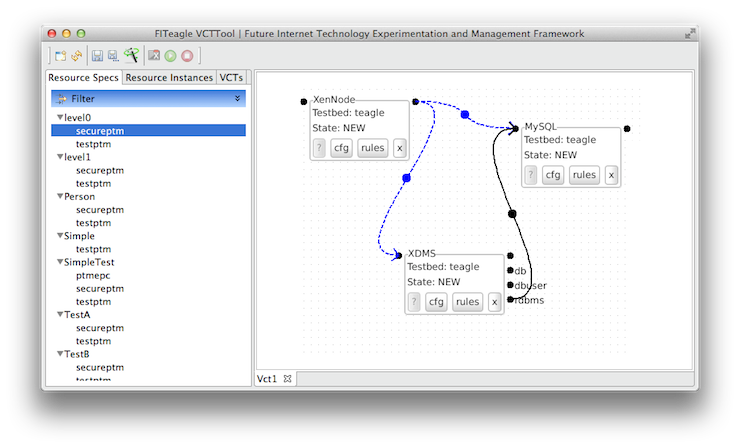

About FITeagle
In Short
FITeagle is an extensible and distributed open source experimentation and management framework for federated Future Internet testbeds.
Longer Description
Within the context of Future Internet research activities different approaches are in the process of being developed. Starting with incremental evolutionary attempts onwards to complete revolutionary ideas.
In order to evaluate new protocols and architectures testbeds with a wide range of heterogeneous resources and variability in terms of size and complexity are needed.
Although there are several existing wireless and wired testbeds to run experiments on, they are - in terms of user management, experiment control, connectivity, ... - independent of each other.
FITeagle endeavors to provide a framework to seamlessly interconnect and control experiments with arbitrary resources in a wide range of available testbeds. This includes the interoperability with other federated testbed management and experimentation frameworks.
FITeagle is mainly based on the FIRE-Teagle developments and therefore inherits its basic conceptional architecture. FIRE-Teagle was successfully deployed and used in the Panlab project and is currently going to be extended within the OpenLab project.
Architectural Overview
{kind=link}
Projects & Sponsors
Support or Contact
If you have any questions please do not hesitate to contact or follow us:
Users
Quick Start
The current URLs for the legacy services are:
http://fiteagle.org/api/legacy/repository
http://fiteagle.org/api/legacy/reqproc
http://fiteagle.org/downloads
Double click on FITeagle.app
Double click on vcttool-jar-with-dependencies.jar
java -jar vcttool-jar-with-dependencies.jar
Further Information
Have a look at the auto generated site for users and developers:
http://fiteagle.org/docs
Developers
Quick Start
To start the VCTTool:
git clone https://github.com/tubav/fiteagle.git
cd fiteagle/clients/vcttool
./src/main/scripts/startVCTTool.sh
Sources
http://fiteagle.org/sources
Binaries
http://fiteagle.org/downloads
Issue Tracker
http://fiteagle.org/issues
Continuos Integration
http://fiteagle.org/ci
Further Information
Have a look at the auto generated site for users and developers:
http://fiteagle.org/docs
Demonstrations
Screenshots
- FITeagle VCT Tool (Controller)

{kind=link}